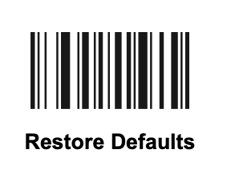
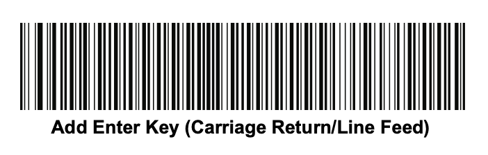
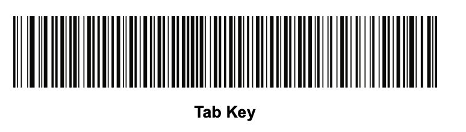
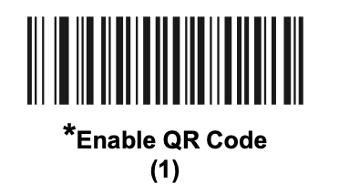
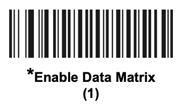

Jeden kod kreskowy. Bez instalowania programów.
Po każdym skanie musisz ręcznie wcisnąć Enter. Przy setce paczek dziennie to setka zbędnych kliknięć.
Zeskanuj Restore Defaults. Skaner potwierdzi sygnałem.
⚠ Skaner ustawiany przez Twój dział IT? Najpierw zapytaj — reset kasuje ich konfigurację.

Zeskanuj Add Enter Key — od teraz skaner sam „naciska" Enter.

Zeskanuj dowolny kod do Notatnika. Kursor przeskakuje sam — gotowe.
5901234123457 5907524001022 PL20261128-0042 |
Najpierw Restore Defaults, potem Tab Key. Wybierz jedno: Enter albo Tab.

Czytają tylko kody kreskowe (1D). QR i DataMatrix nie przeczytają — żadne ustawienie tego nie zmieni.
Czyta QR i DataMatrix. Ktoś je wyłączył? Zeskanuj kod:


Kod kraju „Poland" z instrukcji PRG Twojego modelu — sekcja Country Codes.
Układ klawiatury „Polski (programisty)”.
Skaner nadal nie działa jak trzeba?
Zadzwoń: +48 601 619 898